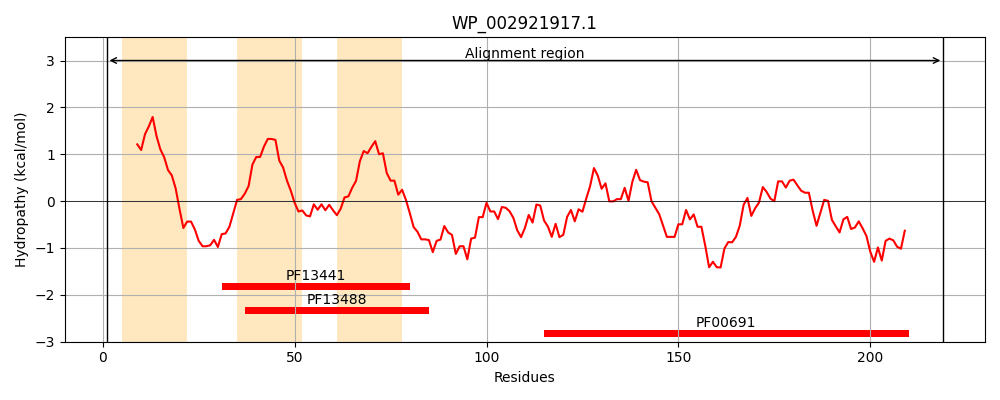
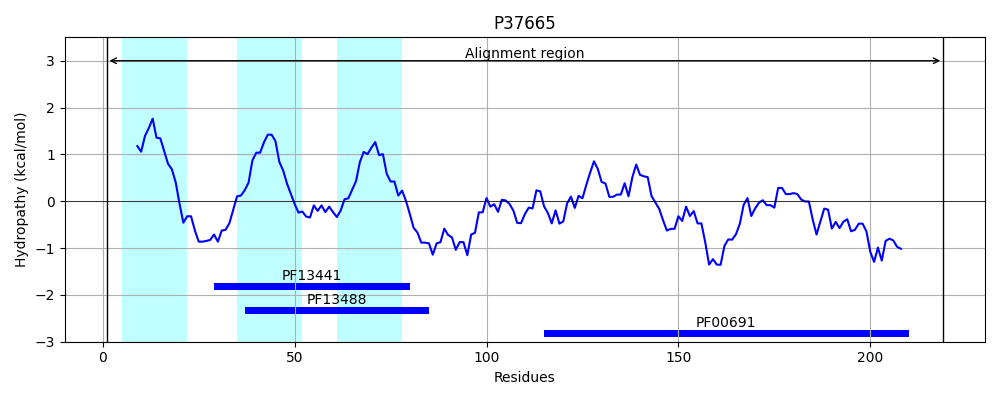
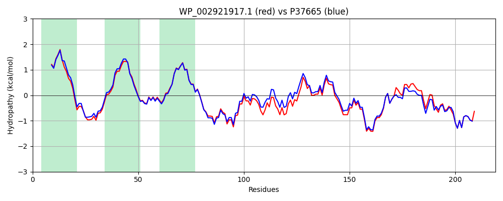

Hit Accession: P37665
Hit TCID: 9.B.186.1.1
Hit Description: gnl|BL_ORD_ID|10127 gnl|TC-DB|P37665|9.B.186.1.1 Probable lipoprotein YiaD OS=Escherichia coli (strain K12) GN=yiaD PE=1 SV=2
Mach Len: 219
e:0.000000
Query TMS Count : 3
Hit TMS Count: 3
TMS-Overlap Score: 2.700000
Predicted Substrates:None
BLAST Alignment:
Score: 993 , Bit scores: 387 bits, E-value: 8.0e-139, Alignment length: 219, Percentage identity: 89
Query: 1 MKKRVLMIAALVSGTLAISGCTTNPYTGEREAGKSGIGAGIGSLVGAGVGALSSSKHDRGKGALIGAAAGAALGGGIGYYMDVQEAKLRDKMQGTGVSVTRNGDNIVLNMPNNVTFDSNSANLKPAGANTLTGVAMVLKEYEKTAVNVVGYTDSTGSKDLNMRLSQQRADSVASALITQGVAANRIRTTGMGPANPIASNSTAEGKAQNRRVEITLSPL 219
MKKRV +IAA+VSG LA+SGCTTNPYTGEREAGKS IGAG+GSLVGAG+GALSSSK DRGKGALIGAAAGAALGGG+GYYMDVQEAKLRDKM+GTGVSVTR+GDNI+LNMPNNVTFDS+SA LKPAGANTLTGVAMVLKEY KTAVNV+GYTDSTG DLNMRLSQQRADSVASALITQGV A+RIRT G+GPANPIASNSTAEGKAQNRRVEITLSPL
Sbjct: 1 MKKRVYLIAAVVSGALAVSGCTTNPYTGEREAGKSAIGAGLGSLVGAGIGALSSSKKDRGKGALIGAAAGAALGGGVGYYMDVQEAKLRDKMRGTGVSVTRSGDNIILNMPNNVTFDSSSATLKPAGANTLTGVAMVLKEYPKTAVNVIGYTDSTGGHDLNMRLSQQRADSVASALITQGVDASRIRTQGLGPANPIASNSTAEGKAQNRRVEITLSPL 219 | Protein Hydropathy Plots: |
|---|
|  |  |
Pairwise Alignment-Hydropathy Plot:
|
|---|
|  |